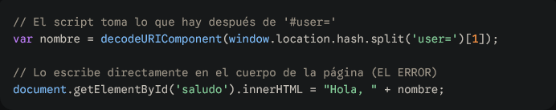
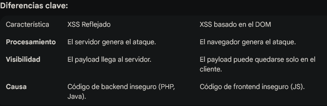

DOM Based XSS
El XSS (Cross-Site Scripting) basado en el DOM es una vulnerabilidad fascinante porque, a diferencia de otros tipos de XSS, el ataque ocurre enteramente en el navegador del usuario. El servidor ni siquiera se entera de lo que está pasando.
Aquí te explico cómo funciona, por qué es distinto y cómo identificarlo.
En el XSS Tradicional (Reflejado o Persistente), el código malicioso viaja al servidor y este lo incluye en la respuesta HTML.
En el XSS basado en el DOM, el flujo es distinto:
Para entenderlo, debemos ver el código como una tubería:
location.search, location.hash (lo que va después del #), o document.referrer.eval(), setTimeout(), o propiedades como .innerHTML.Imagina una página que saluda al usuario usando un parámetro en la URL: http://ejemplo.com/inicio#user=Pepe
El código de la página es este:

Un atacante te envía este enlace: http://ejemplo.com/inicio#user=<img src=x onerror=alert('XSS')>
.innerHTML, el navegador intenta renderizar la "imagen" rota, falla y ejecuta el alert.Muchos firewalls de aplicaciones web (WAF) no lo ven porque los datos que van después del símbolo # (el fragmento) no se envían al servidor. El ataque es invisible para los logs de seguridad del backend; sucede puramente en la memoria del navegador.

.innerHTML: Usa .textContent o .innerText. Estos no interpretan el texto como HTML, solo como texto plano.